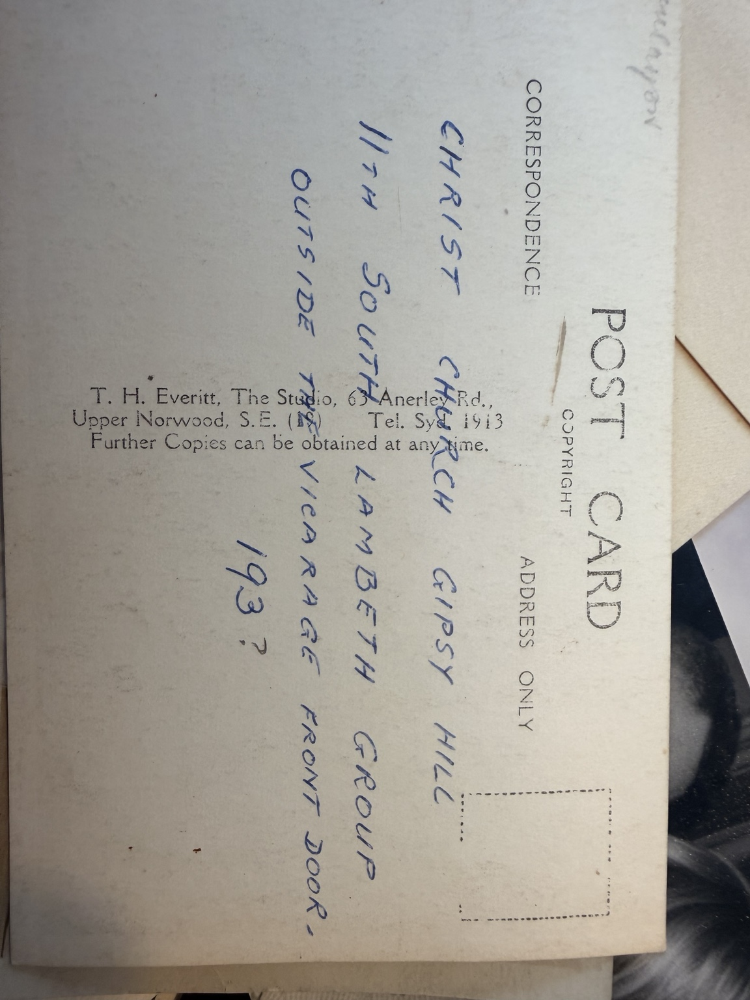

Christ Church Gipsy Hill scout group
Family group photograph and reverse supplied by Antony Greenfield on 8 November 2026. Antony identifies Eric William Valentine Hawes in the second seated row, fourth from the left when the photograph is viewed upright.

Inscription on the reverse
CHRIST CHURCH GIPSY HILL
11TH SOUTH LAMBETH GROUP
OUTSIDE THE VICARAGE FRONT DOOR.
193?
The final year digit is a question mark in the supplied note. This suggests a date in the 1930s, but the exact year is unconfirmed. The inscription names the group and setting; the names of other people have not been supplied.

Eric’s position is identified and confirmed by family testimony. Group, setting and tentative date come from the handwritten reverse; the date the annotation was written is unknown.